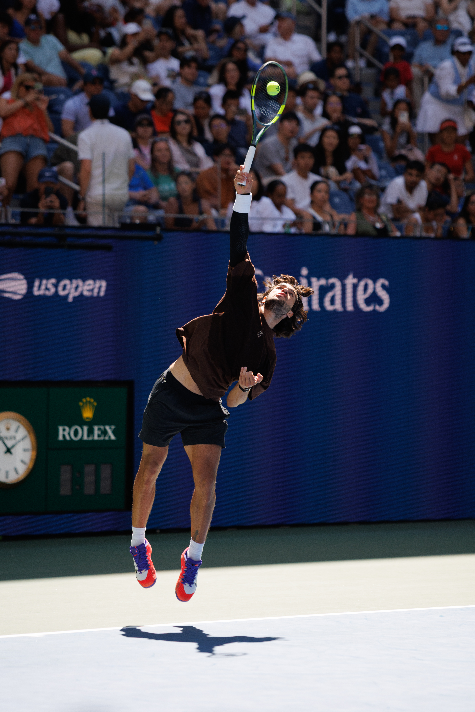

O US Open 2026 chegou oficialmente à segunda semana depois de um sábado, 5 de setembro, que reorganizou as chaves masculina e feminina. A definição das oitavas deu sequência ao cenário construído nos resultados da terceira rodada. A fase foi concluída em Flushing Meadows com eliminações de jogadores do top 10 do chaveamento, classificações de ex-campeões e histórias que ampliaram o grupo de candidatos a uma campanha longa em Nova York.
Entre os principais resultados estiveram a virada de Francisco Cerúndolo sobre Taylor Fritz, a eliminação de Flavio Cobolli, e a vitória de Anastasia Potapova sobre Amanda Anisimova. No feminino, Qinwen Zheng protagonizou uma das recuperações mais impressionantes do torneio ao reverter uma enorme desvantagem contra Madison Keys.
Ao mesmo tempo, nomes de peso mantiveram suas campanhas. Coco Gauff, Iga Swiatek, Mirra Andreeva e Elena Rybakina avançaram em dois sets, enquanto Naomi Osaka precisou de três para superar Elise Mertens. No masculino, Alexander Zverev teve uma noite bem mais curta do que nas rodadas anteriores e confirmou presença nas oitavas.
Uma das grandes viradas do sábado
Taylor Fritz parecia encaminhado para as oitavas quando abriu dois sets de vantagem sobre Francisco Cerúndolo. O argentino, porém, mudou completamente o confronto.
Cerúndolo venceu por 3 sets a 2, com parciais de 3/6, 4/6, 6/3, 6/4 e 6/4. A reação eliminou o cabeça de chave número 9 e colocou o argentino nas oitavas de final.
A saída de Fritz teve peso especial por acontecer diante de um dos principais representantes dos Estados Unidos na chave masculina. O resultado também abriu um caminho menos previsível naquele setor do torneio.
Outro cabeça de chave importante eliminado foi Flavio Cobolli. O italiano, número 5 do torneio, ganhou o primeiro set contra Alexander Blockx, mas o belga reagiu e venceu por 6/7(4), 6/3, 6/0 e 6/3.
Com isso, as oitavas colocaram frente a frente justamente dois jogadores responsáveis por grandes surpresas da terceira rodada: Francisco Cerúndolo e Alexander Blockx.
Zverev evita novo desgaste e avança
Alexander Zverev viveu uma realidade diferente das duas primeiras rodadas. Depois de disputar partidas longas de cinco sets, o alemão venceu Alejandro Tabilo por 6/2, 7/6(2) e 6/2.
O segundo set concentrou o principal momento de dificuldade: Tabilo chegou a ter duas oportunidades para fechar a parcial, mas Zverev conseguiu escapar e dominou o tie-break antes de controlar o terceiro set.
A vitória colocou o cabeça de chave número 1 nas oitavas, em confronto contra Luciano Darderi, que também avançou no sábado ao derrotar Dane Sweeny.
Resultados do masculino no sábado:
- Francisco Cerúndolo 3 x 2 Taylor Fritz
- Alexander Blockx 3 x 1 Flavio Cobolli
- Luciano Darderi 3 x 0 Dane Sweeny
- Karen Khachanov 3 x 0 Benjamin Bonzi
- Arthur Gea 3 x 2 Michael Zheng
- Botic van de Zandschulp 3 x 2 Zizou Bergs
- Learner Tien 3 x 2 Jakub Mensik
- Alexander Zverev 3 x 0 Alejandro Tabilo
Zheng salva match point e avança
No feminino, nenhum roteiro superou o de Qinwen Zheng contra Madison Keys.
Keys dominou o primeiro set por 6/1, mas Zheng levou o segundo no tie-break. Na parcial decisiva, a americana abriu 5/0 e chegou a ter match point quando vencia por 5/1.
Zheng permaneceu na partida, recuperou as quebras e ganhou sete dos últimos oito games para fechar a partida em 1/6, 7/6(3) e 7/5.
A chinesa chegou às oitavas depois de passar pelo qualifying e se tornou uma das histórias mais fortes da primeira semana. O adversário seguinte será Iga Swiatek.
Swiatek precisou de dois tie-breaks
Iga Swiatek também teve trabalho, apesar da vitória em sets diretos sobre Marie Bouzkova.
A polonesa venceu por 7/6(3) e 7/6(3), depois de uma partida de aproximadamente duas horas e meia. Bouzkova chegou a ter três set points na segunda parcial, mas Swiatek reagiu e voltou a dominar o desempate.
Foi a primeira vez na carreira da polonesa que ela venceu dois tie-breaks em uma mesma partida. Swiatek chegou às oitavas sem perder sets e terá justamente Zheng pela frente.
Gauff avança sem perder set
Coco Gauff também preservou uma campanha limpa. A campeã do US Open de 2023 derrotou Cristina Bucsa por 6/3 e 6/4.
A americana chegou às oitavas de final pela quinta edição consecutiva do torneio e continuou sem ceder uma parcial nas três primeiras rodadas.
O próximo compromisso será um duelo geracional contra Iva Jovic, de 18 anos. Jovic eliminou Alexandra Eala em três sets, 7/5, 3/6 e 7/5.
Osaka sobrevive a Mertens e encontra Rybakina
Naomi Osaka precisou encontrar soluções até o fim para eliminar Elise Mertens. A japonesa venceu por 6/3, 3/6 e 7/5 em 2h38.
Osaka recebeu atendimento por um problema na parte inferior da perna durante o terceiro set, mas conseguiu terminar a partida e assegurar a classificação.
Nas oitavas, a bicampeã do US Open terá pela frente Elena Rybakina. A cazaque derrotou Yuliia Starodubtseva por 7/6(6) e 6/3 e igualou sua melhor campanha em Nova York ao alcançar novamente a quarta rodada.
Resultados do feminino no sábado:
- Qinwen Zheng 2 x 1 Madison Keys
- Anastasia Potapova 2 x 0 Amanda Anisimova
- Mirra Andreeva 2 x 0 Nikola Bartunkova
- Iga Swiatek 2 x 0 Marie Bouzkova
- Coco Gauff 2 x 0 Cristina Bucsa
- Naomi Osaka 2 x 1 Elise Mertens
- Iva Jovic 2 x 1 Alexandra Eala
- Elena Rybakina 2 x 0 Yuliia Starodubtseva
Oitavas de final do US Open 2026: confrontos definidos
Com a conclusão da terceira rodada, as chaves de simples chegaram às oitavas. Parte dos confrontos acontece neste domingo, 6 de setembro, e a outra parte está programada para segunda-feira, 7 de setembro.
Masculino:
- Carlos Alcaraz x Tommy Paul
- Alex Michelsen x Tomas Martin Etcheverry
- Daniil Medvedev x Frances Tiafoe
- Ben Shelton x Stefanos Tsitsipas
- Alexander Zverev x Luciano Darderi
- Arthur Gea x Botic van de Zandschulp
- Karen Khachanov x Learner Tien
- Francisco Cerúndolo x Alexander Blockx
Feminino
- Aryna Sabalenka x Taylor Townsend
- Marta Kostyuk x Linda Noskova
- Jessica Pegula x Sorana Cirstea
- Anna Kalinskaya x Emma Navarro
- Iga Swiatek x Qinwen Zheng
- Naomi Osaka x Elena Rybakina
- Mirra Andreeva x Anastasia Potapova
- Iva Jovic x Coco Gauff
Horários das oitavas neste domingo, 6 de setembro
Os horários abaixo estão no horário de Brasília:
- Aryna Sabalenka x Taylor Townsend — 12h30
- Marta Kostyuk x Linda Noskova — 13h30
- Tommy Paul x Carlos Alcaraz — 15h
- Alex Michelsen x Tomas Martin Etcheverry — 15h30
- Daniil Medvedev x Frances Tiafoe — 16h
- Jessica Pegula x Sorana Cirstea — 17h40
- Ben Shelton x Stefanos Tsitsipas — 20h
- Anna Kalinskaya x Emma Navarro — 21h40
A programação do US Open prevê rodada diurna e noturna das oitavas neste domingo. A sessão do dia começa às 11h em Nova York, 12h de Brasília, e a sessão noturna às 19h locais, 20h de Brasília.
Confrontos de segunda-feira, 7 de setembro
Masculino
- Alexander Zverev x Luciano Darderi
- Arthur Gea x Botic van de Zandschulp
- Karen Khachanov x Learner Tien
- Francisco Cerúndolo x Alexander Blockx
Feminino
- Iga Swiatek x Qinwen Zheng
- Naomi Osaka x Elena Rybakina
- Mirra Andreeva x Anastasia Potapova
- Iva Jovic x Coco Gauff
O US Open já confirma sessões a partir das 11h em Nova York, com rodada noturna às 19h, mas os horários individuais dessas partidas dependem da ordem de jogos oficialmente consolidada.
A cobertura do US Open 2026 no Brasil está disponível pela ESPN e pelo Disney+ para assinantes do Plano Premium.
A composição das oitavas mostra o equilíbrio entre campeões de Grand Slam, jogadores consolidados e nomes que aproveitaram as primeiras rodadas para romper setores da chave. Seis ex-campeões de simples do US Open chegaram à quarta rodada: Aryna Sabalenka, Carlos Alcaraz, Coco Gauff, Daniil Medvedev, Naomi Osaka e Iga Swiatek. Ao mesmo tempo, sete tenistas não cabeças de chave seguem vivos e cinco jogadores com 21 anos ou menos alcançaram as oitavas.
O torneio entra, portanto, em uma fase na qual os confrontos passam a concentrar cada vez mais candidatos ao título. Swiatek contra Zheng reúne uma campeã do US Open e uma jogadora que já protagonizou uma das maiores reações desta edição. Osaka contra Rybakina coloca frente a frente duas campeãs de Grand Slam. No masculino, Alcaraz, Medvedev, Zverev e Shelton continuam vivos, mas dividem espaço com jogadores que já provaram em Nova York que a posição no chaveamento não garante passagem para a rodada seguinte.
Essa combinação entre tradição e renovação faz parte da própria história do US Open e de seus grandes campeões: o torneio costuma transformar a segunda semana em um teste completamente diferente daquele encontrado nas rodadas iniciais. A edição de 2026 chega às oitavas exatamente com esse cenário, após uma terceira rodada que eliminou favoritos, confirmou candidatos e deixou a chave mais aberta em vários setores.